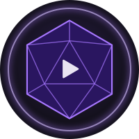

Omni-Vidéo
Le montage vidéo tout simple, pour YouTube.
Tu choisis le moment. Tes projets restent tels quels. Si tu fermes complètement Omni-Vidéo, la nouvelle version sera là à la prochaine ouverture.
Elle aura son icône sur l'écran d'accueil, s'ouvrira en plein écran et fonctionnera sans Internet.
Mes projets
Tu n'as pas encore de projet. Touche « Nouveau projet » pour commencer ta première vidéo.
« Sauvegarder » met un projet dans un fichier .omnivideo (montage, images, musiques et voix off, mais pas les vidéos) : pour garder une copie, ou pour passer sur une autre tablette.
Réalisé par Ferrus Dantioch
Projet
La tablette ne laisse pas une application garder l'accès à tes vidéos d'une fois sur l'autre. Touche le bouton, puis choisis-les à nouveau : tu peux toutes les sélectionner d'un coup, Omni-Vidéo les reconnaît toute seule.
0:00,0 sur 0:00
Ajouter mon intro ou ma fin
Fabrique ton intro (logo, titre, petite musique) ou ta fin (« Abonne-toi ! ») comme un petit projet à part. Ensuite, ajoute-la ici, au début ou à la fin de cette vidéo.
Pas encore d'autre projet. Retourne à « Mes projets » et crée par exemple un projet « Mon intro ».
Aucun fichier pour l'instant. Commence par ajouter tes vidéos : elles restent sur la tablette, rien n'est envoyé sur Internet.
Aucun texte pour l'instant. Place la ligne violette de la chronologie là où le texte doit apparaître, puis touche « Ajouter un texte ».
Touche l'image à poser sur la vidéo :
Tu n'as pas encore d'image dans ce projet.
Aucune image incrustée. Une image incrustée s'affiche PAR-DESSUS la vidéo : un logo dans un coin, une photo, une flèche… Pour une image en plein écran entre deux vidéos, utilise plutôt « Ajouter à la vidéo » dans « Mes fichiers ».
Musique de fond
Touche la musique à mettre sous la vidéo :
Tu n'as pas encore de musique dans ce projet.
Pas de musique de fond. Elle se règle à 30 % du volume au départ, pour qu'on entende bien les voix ; tu peux la monter ou la baisser.
Voix off
Place la ligne violette, touche « Enregistrer » et parle : la vidéo défile pendant que tu parles. Touche « Arrêter » quand tu as fini.
Pas encore de voix off.
Le son de chaque clip vidéo se règle dans la chronologie : touche le clip, puis « Son du clip ».
Apparence des sous-titres
Taille
Place
« Un peu plus haut » : pour les Shorts, dont le bas est caché par les boutons de YouTube.
Pour bien lire
Couleur
Décaler tous les sous-titres
Si les sous-titres arrivent trop tôt ou trop tard par rapport à la voix, décale-les tous d'un coup.
« − » : ils arrivent plus tôt. « + » : plus tard.
Pas encore de sous-titres. Place la ligne violette là où quelqu'un parle, touche « Ajouter un sous-titre », puis écris ce qui est dit. Tu peux aussi importer un fichier .srt ou .vtt.
Le fichier .srt peut aussi être envoyé sur YouTube (« Sous-titres »), en plus des sous-titres incrustés dans l'image.
Miniature : l'image qui donne envie de cliquer
Peu de mots, en gros : c'est ce qui se lit le mieux sur un petit écran.
Couleur du titre
Place du titre
Taille du titre
Elle arrive dans « Téléchargements », en image JPEG à la taille demandée par YouTube. Au moment de publier ta vidéo sur YouTube, choisis de modifier la miniature et importe cette image. YouTube peut demander de valider ton compte par téléphone (une seule fois) avant d'accepter une miniature.
Chapitres : les étapes de ta vidéo
Les chapitres découpent ta vidéo en parties (« Intro », « La recette »…). Sur YouTube, on peut sauter directement à l'une d'elles.
Pas encore de chapitres. Le premier commence toujours au début de la vidéo. Ensuite, place la ligne violette là où une nouvelle partie commence, et touche « Ajouter un chapitre ».
Puis, sur YouTube, colle ce texte dans la description de ta vidéo.
Modifier le texte
Attention : ce moment est après la fin de la vidéo, il ne sera pas visible. Place la ligne violette plus tôt, puis touche « Commence à la ligne ».
Police, taille et couleur
Pour bien lire le texte
Place dans l'image
Fais glisser du doigt dans l'aperçu, ou touche une place :
Quand il apparaît
Sous-titre
Attention : ce moment est après la fin de la vidéo, il ne sera pas visible. Place la ligne violette plus tôt, puis touche « Commence à la ligne ».
Deux lignes au plus, c'est plus facile à lire. Va à la ligne avec la touche « Entrée ».
La chronologie est vide. Touche « Ajouter à la vidéo » sur une vidéo ou une image de « Mes fichiers ».
Vitesse du clip
Le son suit la vitesse : plus grave au ralenti, plus aigu en accéléré. Tu peux couper le son du clip juste en dessous.
Mouvement de la photo
Un mouvement lent rend une photo plus vivante.
Lumière et couleurs du clip
Une vidéo filmée un peu sombre : monte la lumière. Couleurs à 0 % : noir et blanc.
Vérifier ma tablette
Omni-Vidéo vérifie ici ce que ta tablette sait faire : lire les vidéos, fabriquer la vidéo finale, garder tes projets… Rien n'est envoyé sur Internet.
À propos
Omni-Vidéo
Version
Un outil de montage vidéo tout simple, pour préparer tes vidéos YouTube sur ta tablette : couper, assembler, ajouter des textes, des images, de la musique, ta voix et des sous-titres, puis fabriquer le fichier MP4 final.
Application gratuite. Omni-Vidéo fonctionne sans connexion et sans compte. Tes vidéos et tes projets restent sur ta tablette : rien n'est envoyé ailleurs.
Conception
Application développée par Ferrus Dantioch, avec l'aide de Claude, une intelligence artificielle développée par Anthropic.
Omni-Vidéo est née d'une collaboration entre eux deux. Ferrus Dantioch, créateur de l'Omni-système, en a eu l'idée, a choisi ses fonctions et son apparence, puis l'a testée. Claude a écrit le code en suivant ses consignes, et ils l'ont améliorée ensemble, échange après échange.
L'application elle-même n'utilise aucune intelligence artificielle.
Retours
Une idée, une gêne, quelque chose qui manque ? Tes retours sont les bienvenus, même en quelques mots. Écris à : omni-systeme.choking513@passmail.net
Envoyer un retour par e-mailLicence
Distribuée sous licence Creative Commons BY-NC-ND 4.0 (Attribution - Utilisation non commerciale - Pas d'Œuvre dérivée).
Tu peux utiliser Omni-Vidéo et en partager des copies identiques, gratuitement, à condition de citer l'auteur (Ferrus Dantioch) et d'indiquer la licence. Il est interdit de la vendre ou d'en tirer un profit commercial, et de diffuser une version modifiée. Le logiciel est fourni « en l'état », sans aucune garantie.
Les vidéos que tu fabriques avec Omni-Vidéo t'appartiennent : la licence concerne seulement le code de l'application.
© 2026 Ferrus Dantioch
Crédits
Mediabunny (lecture et fabrication des fichiers vidéo), de Vanilagy et ses contributeurs, version 1.63.0, sous sa propre licence, la Mozilla Public License 2.0 (fichier LICENCE-MEDIABUNNY.txt). Le fichier est inclus sans modification ; son code source est disponible sur github.com/Vanilagy/mediabunny ↗.
Encodeur AAC de secours (le son de la vidéo finale, si la tablette ne sait pas le fabriquer elle-même) : l'encodeur AAC de VisualOn (vo-aacenc 0.1.3, publié par l'Android Open Source Project), sous sa propre licence, l'Apache License 2.0 (fichier LICENCE-APACHE-VO-AACENC.txt). Compilé sans modification, avec une petite passerelle écrite pour Omni-Vidéo ; code source sur github.com/mstorsjo/vo-aacenc ↗.
Polices de caractères : Oxanium, Literata et JetBrains Mono, sous leur propre licence, la SIL Open Font License 1.1 (fichier POLICES-OFL.txt).
Installation sur Android : si Chrome indique « Cette appli est déjà installée » alors qu'elle ne l'est pas, c'est une limite de Chrome quand une autre application de ce site est déjà installée. Utilise un autre navigateur (Brave, par exemple), ou choisis « Créer un raccourci ».
Réalisé par Ferrus Dantioch